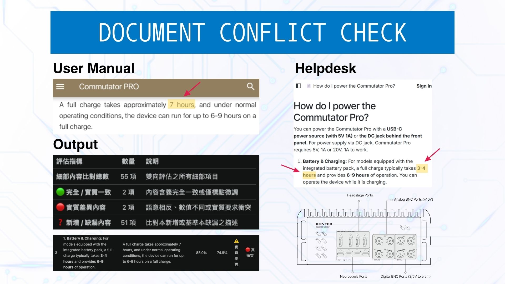

通用型多模態文件衝突檢測系統
Universal Multimodal Document Conflict Checker

展示內容：合約、規範、章程、計畫書之圖文跨模態邏輯矛盾比對
跨版本內容不同步
各類商業合約、法規規章、技術手冊與計畫書在多次修訂後，常因多人協作導致關鍵條款、數值承諾或責任定義前後矛盾，人工逐頁審閱難以全面覆蓋。
商用模型幻覺誤判
直接運用現成大型語言模型審閱長文時，極易在計算加總、相似名詞或句意指涉上產生幻覺，回傳大量錯誤的假矛盾，造成審核人員嚴重的二次查核負擔。
全場景圖文多模態整合
突破純文字限制，整合圖表、結構示意圖與內文說明進行跨模態對齊，無論是商業合約、組織章程、專案計畫書或工程規範，皆能精確鎖定實質衝突。
比肩頂尖模型成效
自研檢測管線在多維度評測中展現高判斷穩定度，整體準確度與效果等於甚至優於商用大型模型，同時顯著收斂不必要的誤報。
衝突檢測與驗證流程
多模態拆解清洗
解析多格式文檔中的文字與圖像資訊，濾除排版雜訊並建立跨模態結構化單元。
跨版本對齊匹配
比對跨版本中相對應的章節條款與關聯圖表，確保對等內容建立精準對照。
圖文邏輯仲裁
檢驗條款陳述、數值與圖像標示間的一致性，有效排除模型易誤判的假性衝突。
差異報表匯出
將一致項、增刪變更及實質衝突條目進行清晰分類，產出直觀報表輔助審閱決策。
綜合檢測成效表現
* 在實際跨版本多模態驗證中，系統展現了高度一致的判斷穩定度，克服了傳統大模型容易產生圖文理解幻覺的痛點，達成商用落地水準。